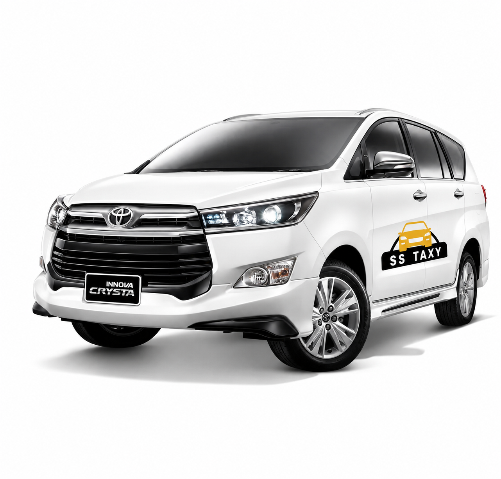

We are top travel agency offers safe, reliable and affordable cab
service for all your trips. SS Taxy Pvt. Ltd. is a leading outstation
cab service provider that offers reliable and cost-effective solutions for all your local travel needs. With a fleet of well-maintained cars,
experienced drivers and 24/7 customer support, they are the go-to
choice for travelers who want to explore India’s diverse landscape
in a safe and comfortable manner.
SS Taxy Pvt. Ltd. provides a wide range of services, including
one way trips, as well as custom packages. Their vehicles range
from luxury cars to economical options so that you can choose the
one that best suits your budget. They also provide excellent
customer service with their team of friendly staff always ready
to help you with any query or issue you may have.
With the vision of making taxi rental services easier and affordable, we have come a long way. Over the last decade, we are fulfilling the customer expectations. It has been positively changing the dynamics of the outstation taxi market. we are the fastest car rental network in Lucknow delivering the best in car rental services as excepted. KTS Cabs Pvt. Ltd. is the largest car rental service provider in Lucknow. It has been offering rental services for one-way, round-trip, local city, airport transfers in more than 100+ major Indian cities including Delhi NCR, Mumbai, Bangalore, Pune, Chennai, Hyderabad, Kolkata, Jaipur, Jammu and more.
At KTS Cabs, we are committed to excellence in every aspect of our taxi business. From punctuality to professionalism, we leave no stone unturned to ensure that your travel experience with us is nothing short of exceptional. Our fleet of well-maintained vehicles, driven by skilled and courteous chauffeurs, is a testament to our commitment to quality service.
KTS Cabs offers a diverse range of services to cater to your every travel need. Whether you're heading to the airport, planning a city tour, or require corporate transportation, we have a solution for you. Our fleet includes a variety of vehicles, from comfortable sedans to spacious SUVs, ensuring that we can accommodate your preferences and group size.
Customer satisfaction is at the heart of our taxi business. We understand that every journey is unique, and we strive to tailor our services to meet your specific requirements. Our customer-centric approach means that we value your time, comfort, and safety above all else.
Embracing the latest technology, KTS Cabs ensures a modern and convenient booking experience for our customers. Our user-friendly app and online booking platform make it easy for you to reserve a taxi at your convenience. We believe in staying ahead in the tech-driven era to provide a seamless and efficient service.
As a Lucknow-based taxi service, KTS Cabs brings a deep understanding of the local landscape. Our drivers are not just chauffeurs; they are knowledgeable guides who can navigate the city with ease, ensuring you reach your destination efficiently while discovering the best routes.
Your safety is our top priority. KTS Cabs adheres to rigorous safety standards, and our vehicles undergo regular maintenance checks. From well-maintained brakes to airbags, we prioritize the safety features of our fleet to provide you with a secure and comfortable ride.
Whether you are a resident of Lucknow or a visitor exploring the vibrant city, KTS Cabs invites you to join us on a journey marked by reliability, professionalism, and a touch of hospitality. As we continue to grow, our commitment to delivering exceptional taxi services in Lucknow remains unwavering. Choose KTS Cabs for a ride that goes beyond transportation – it's an experience crafted just for you.
KTS Cabs – Where Every Journey is an Experience!
